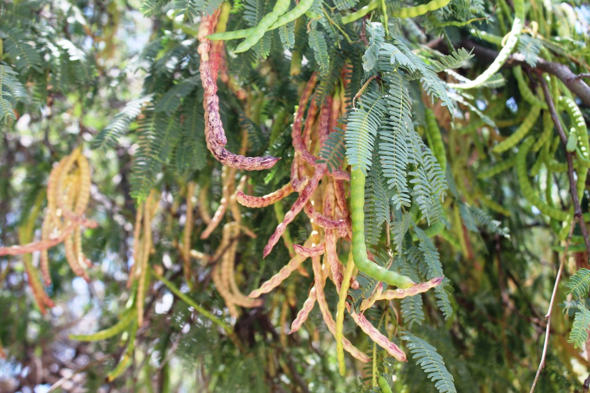

Utiliza tu dispositivo móvil para visualizar este recurso
Se recomienda utilizar auriculares
Lente Decolonial: Quienes estaban antes de SPGG
¿Decolonizar?
Observar...
Reflexionar...
Desmantelar...
Las estructuras opresoras heredadas del proceso colonial que aún moldean
nuestra realidad.
¿El nombre adecuado?
Indios… - De la India.
Chichimecas… - Perro Salvaje.
Indígena … - Nacido Dentro.
¿Estos nombres de verdad representan sus culturas? ¿Sus vivencias? ¿Su
Identidad?
Los nombres
El nombrar viene desde lo ajeno.
Los colonizadores describen lo observado, lo interpretado.
"Los Rayados" "Los Borrados"
No reconocen las particularidades de la cultura.
Impone una postura racial. Facilita la deshumanización.
Nómadas...
Nómada: Carente de un lugar estable para vivir… (RAE)
Personas que se trasladan constantemente.
La narrativa colonial desvirtúa la vida nómada.
-Carente-
Crea un sesgo de “Superior-Inferior”.
Dificulta su verdadera comprensión.
Vida Nómada
Ser nómada es toda una concepción del mundo, la naturaleza y las
relaciones.
El desierto es crudo pero también nutre.
Regiones y Microclimas: Lagunas, Ciénagas, Ríos.
Ser nómada implica una relación cercana con el Desierto.
Traslado
El traslado es básico en la vida nómada.
Todos sus actos y posesiones responden a el viaje constante.
La cercania o lejania de los recursos, su accesibilidad y otros factores
externos afectan la dinámica cultural.
Desierto
La naturaleza provee y los habitantes se nutren.
Aprovechar los diferentes alimentos de temporada.
Mezquite,Maguey,Bellotas,etc.
El alimento y los materiales deben rendir.

Relaciones
Los pueblos se organizaban en rancherías de 60 a 100 personas (12-20
familias).
Las Guerras e Intercambios eran importantes para la subsistencia.
Una sociedad de cazadores es también una sociedad de guerreros.
Reuniones o “Mitotes” para la práctica de alianzas, la convivencia y el
intercambio de información y recursos.
La Llegada del extranjero
Conquista del Noreste
Los conquistadores llegan al Noreste de México en el Siglo XVI.
Incorporación forzada de los pueblos indígenas. A menudo resistieron
ferozmente.
Estrategias como la reubicación de tlaxcaltecas y otros pueblos menos
reacios.
La evangelización como herramienta de dominación.
Esclavismo Indígena
Anexión de Portugal a España. Los Judios son expulsados de la
Península.
Esclavistas portugueses se unen a la colonización.
Muchos migraron al noreste, lejos de los ojos del Virreinato para evitar
juicios por prácticas judías.
Entre ellos Diego de Montemayor, fundador definitivo de Monterrey.
La Esclavitud de los Indígenas estaba prohibida por la ley, pero eso no
impidió su desarrollo bajo otros métodos.
Merced y Encomienda
Merced:Las tierras, recursos y pueblos indígenas del Nuevo Reino de León
fueron divididas y repartidas para incentivar a los colonizadores.
Encomienda:Se otorga cierto terreno y los pueblos indígenas que lo
habitan a cambio de "protegerlos y evangelizarlos".
Las encomiendas se prohibieron en 1542 pero el sistema siguió funcionando
hasta mediados del siglo XVII
Las mercedes de indios y las encomiendas fueron las primeras de muchas
formas de disfrazar la esclavitud.
Esclavitud en la Hacienda
Después de recibir la encomienda, el encomendero buscaba la ranchería que
le concedieron. Mataban a las personas que se resistían, y apresaban al
resto como ganado para llevarlos a los poblados.
En las haciendas eran obligados a trabajar en condiciones muy duras en la
agricultura y otras labores necesarias para sostener el desarrollo.
La misión evangelizadora no fue suficiente para velar por su seguridad ni
era ajena a los abusos de poder.
Las encomiendas se prohibieron en 1542 pero el sistema siguió funcionando
hasta mediados del siglo XVII
Declive poblacional
La combinación de enfermedades introducidas por los europeos, el trabajo
forzado y las malas condiciones de vida contribuyeron a la disminución de
la población indígena en la región.
Las enfermedades como la viruela tuvieron un impacto devastador en las
comunidades indígenas, que no tenían inmunidad a estas nuevas
enfermedades.

Huella y Legado

La estructura social fue profundamente influenciada por las encomiendas.
Jerarquías sociales basadas en la posición económica y el origen étnico.
Estas estructuras se transformaron, pero el legado de las encomiendas y
el impacto de la colonización continuaron influyendo en la región.
Las encomiendas fueron gradualmente abolidas y reemplazadas por otros
sistemas de trabajo.
Más allá de Ayer y Hoy

A lo largo de las salas de este, como en muchos otros museos, encontrarás
objetos, textos, testimonios de nuestra historia.
Te invitamos a seguir deconstruyendo la historia que se te presenta.
Cuestiona...
Reflexiona...
Alza la voz...
Continúa tu visita por el Museo El Centenario
¿Puedes ver las consecuencias de la colonización en la historia del
municipio?
Bienes, historias: Todo es legado… hasta la opresión.
Rompe esa opresión. Hereda libertad.